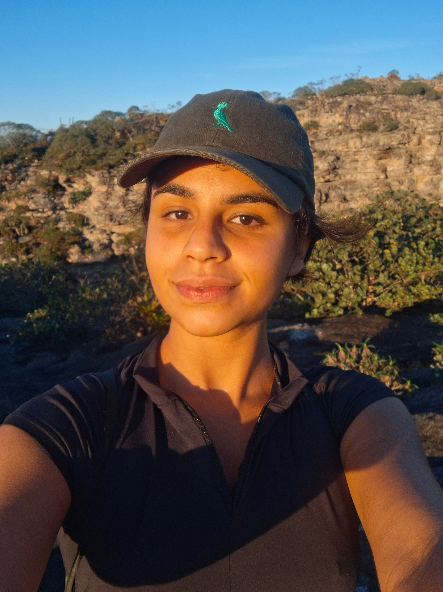
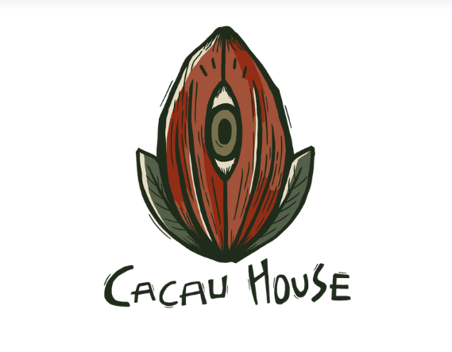

SUA ANFITRIÃ
Nathália Costa
Geógrafa e irmã do Gabriel. Cuida do chalé com carinho e ajuda você a organizar sua chegada e suas vivências na região.
WhatsApp ↗+55 (11) 98411-0243
CACAU HOUSECHAPADA DIAMANTINA · BAHIAGUIA DE BOAS-VINDAS
Informações práticas para a sua chegada, cuidados durante a estadia e orientações para o checkout.
PRECISOU? FALE COM A GENTE
Os contatos da sua estadia,
sempre por perto.

SUA ANFITRIÃ
Geógrafa e irmã do Gabriel. Cuida do chalé com carinho e ajuda você a organizar sua chegada e suas vivências na região.
WhatsApp ↗+55 (11) 98411-0243IDEALIZADOR DA CACAU HOUSE
Idealizador e proprietário da Cacau House. Seu jeito acolhedor e sua relação com a natureza estão nos detalhes do chalé.
WhatsApp ↗+55 (11) 99690-4596Combine o horário com Nathália.
Deixe as chaves dentro da cozinha.
Traga alimentos, repelente e calçados de trilha.
DURANTE A ESTADIA
CUIDAR DA CASA TAMBÉM É CUIDAR DO TERRITÓRIO
Na comunidade da Raposa não há coleta de lixo. Ao fazer o checkout, é necessário levar para a cidade todo o lixo que não tiver sido destinado à composteira e descartá-lo em local adequado. Não deixe sacos de lixo no chalé, na comunidade, nas trilhas ou na natureza.
As orientações abaixo seguem o manejo da composteira do chalé. Cubra os resíduos orgânicos com folhas secas ou serragem do balde preto ao lado da pia. Essa camada ajuda a evitar odores e moscas. Se o material seco acabar ou surgir alguma dúvida, fale com Nathália.
PODE COLOCAR
NÃO COLOQUE
Esses resíduos devem acompanhar o lixo que você levará à cidade.
ANTES DE SE DESPEDIR
Seu tempo aqui começa com cuidado.
Próxima página: Como chegar →